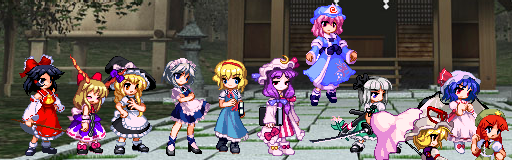
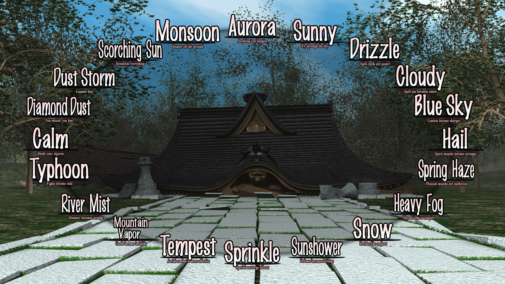
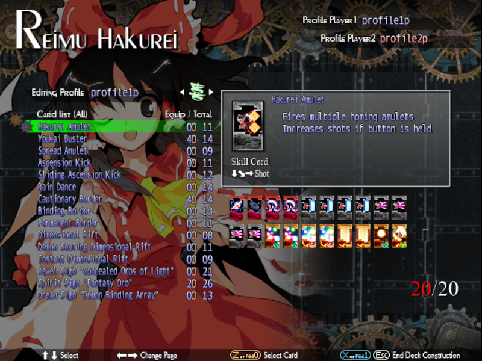

Touhou 12.3 Hisoutensoku
Introduction
Touhou Project
Touhou Project is a Shoot-Em-Up game created by ZUN
Story Mode
Did you see that shadow?
Online Network
Join a lobby, lose first round, esc, and say bgs
Mechanics
Basic Structure
Assuming you have some general knowledge of fighting games otherwise check the affiliated links page.
Weather System
The Weather system introduced in 'Touhou 10.5: Scarlet Weather Rasphody' changes how the game is played in minimal or drastic ways, weathers giving some slight beneifits while some outright changing how the game's played.
This system is a cycle of different rules that apply once the weather timer hits zero, you can cycle through the weathers by either getting knockdowns or using spellcards, you can also manipulate the weather using a system card called 'Sword of Scarlet Perception' which starts or ends the current weather.
Deck Construction
Deck building is a crucial part of the game that changes your offensive and defensive capabilities, depending on what cards are in your hand will determine the gameplan.
Cards range from skill cards changing special inputs, system cards that do various effects and spell cards which are your 'supers' or 'ultimate' in this game which vary in cost from 1-5 cards.
Meter is basically how much cards you have in your current hand, to build meter you use moves that use 'spirit' or by getting the opponent to block your 'spirit' moves, you can cycle through your cards with [A]
Characters
IaMP


SWR


UNL


Character Overview
Notable Characters
Cirno
She is claimed as the Strongest character in the game by all of the community, and being the most Versatile character with an amazing moveset beating the likes of characters such as Yuyuko and Iku, she may feel underwhelming but once you get the hang it, she turns into the most broken character in the game.
having the fastest move in the game [2a] with 5 frames, a 3 cost spellcard that can be converted to almost every single move and two broken 5 costs that carries the game having an instant air unblockable and and spell that fills the screen with bullets doing 5.9k if hit point blank.
Youmu Konpaku
The best and most versitile character in the same with amazing conversions to her meter, soe is the number one best 5 cost card in the game too!
All you have to do is to gain full meter and she has a win button that destroys anyone in an instant.
-- End of Page --